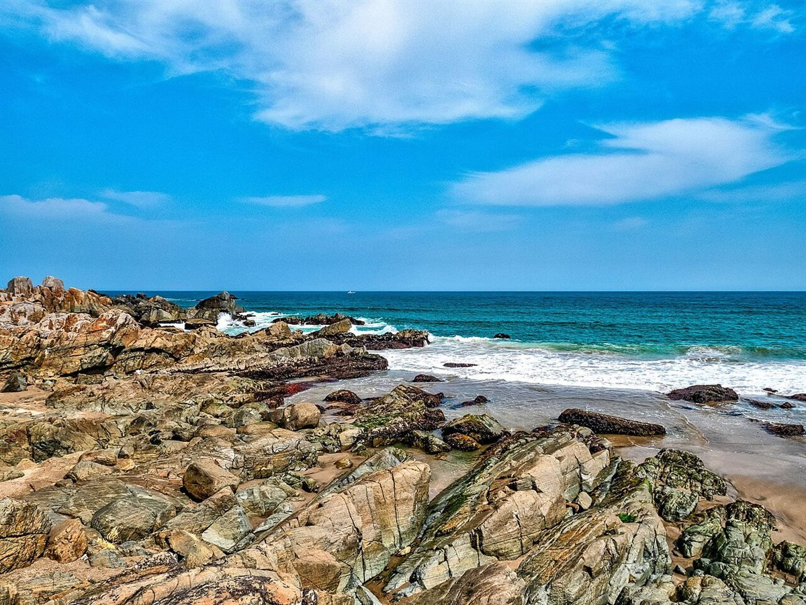

国外のイメージ(イタリア)
制作側の連想
「うさぎ」と「はら」から
店名の由来は分かりません。このページを作った側は、「うさぎのはら」という響きから、月のうさぎと、夜の原っぱを思い浮かべました。そこに、気仙沼という海辺の町の、潮の気配を重ねています。藤色の夜と月白、タンポポの黄。お店の考えとは関係のない、制作側の連想です。

原っぱのけしき
風に揺れる草の穂
写真は気仙沼市の風景ではありません。原っぱを想像して選んだ、国外のイメージです。
海辺の町のイメージ
原っぱのむこうに、海。



どれも気仙沼市の写真ではなく、国内他地域(青森県)や国外のイメージです。

お店のイメージ
写真は、のちほど。
実際の店内やお出しするものの写真は、お店からご提供いただいたものに差し替える予定です。ここにあるのは、店名から想像して選んだ参考写真です。
ご案内
お店のこと(確認できたものだけ)
| 所在地 | 〒988-0623 宮城県気仙沼市浅根135 |
|---|---|
| 電話 | なし |
| 営業時間 | 準備中 |
| 定休日 | 準備中 |
| ご予約 | 準備中 |
| 駐車場 | 準備中 |
| SNS | Instagram @_usaginohara_ |